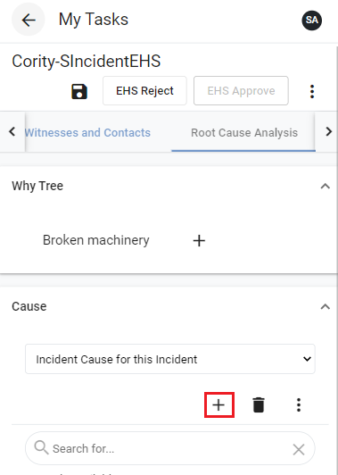

If you are completing an investigation for which a root cause has been identified, you may wish to link an action to that root cause. To create an action:
Select an investigation from the My Tasks view.
Select the RootCauseAnalysis tab.
Select the cause for which you want to assign an action.
Click the vertical ellipsis at the top right.
Select Create Action for this Root Cause. The Finding (w/ Risk) & Actions screen will display.

Complete the Finding (w/ Risk) & Actions record to the best of your ability, ensuring you provide a value for all required fields.